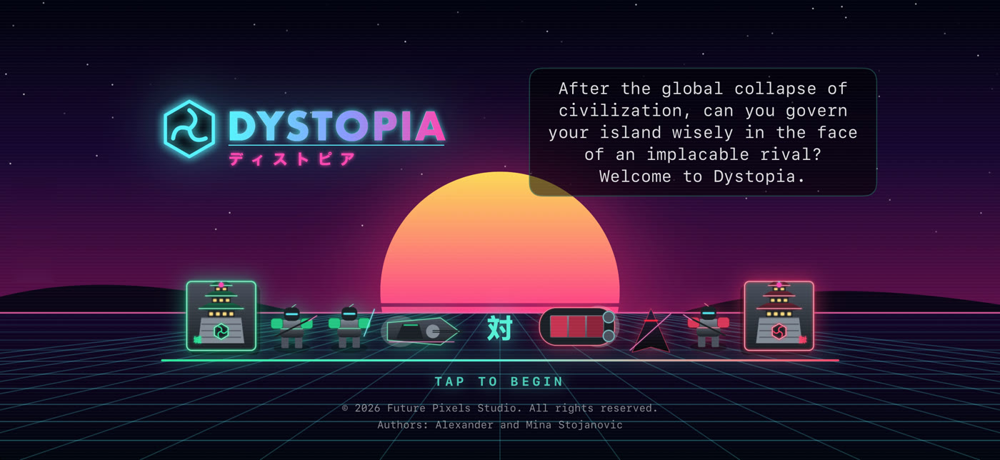
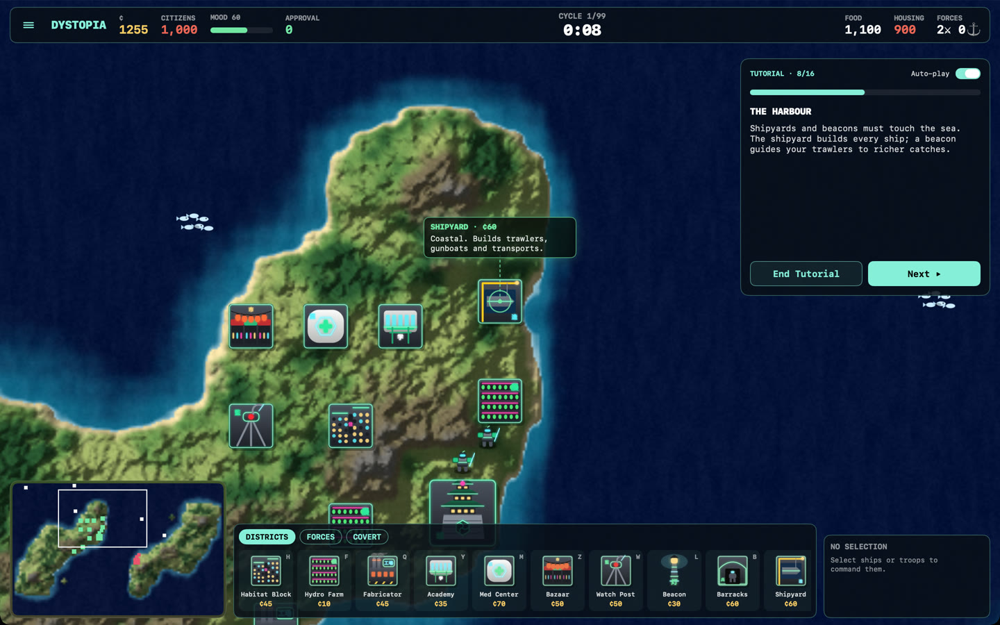
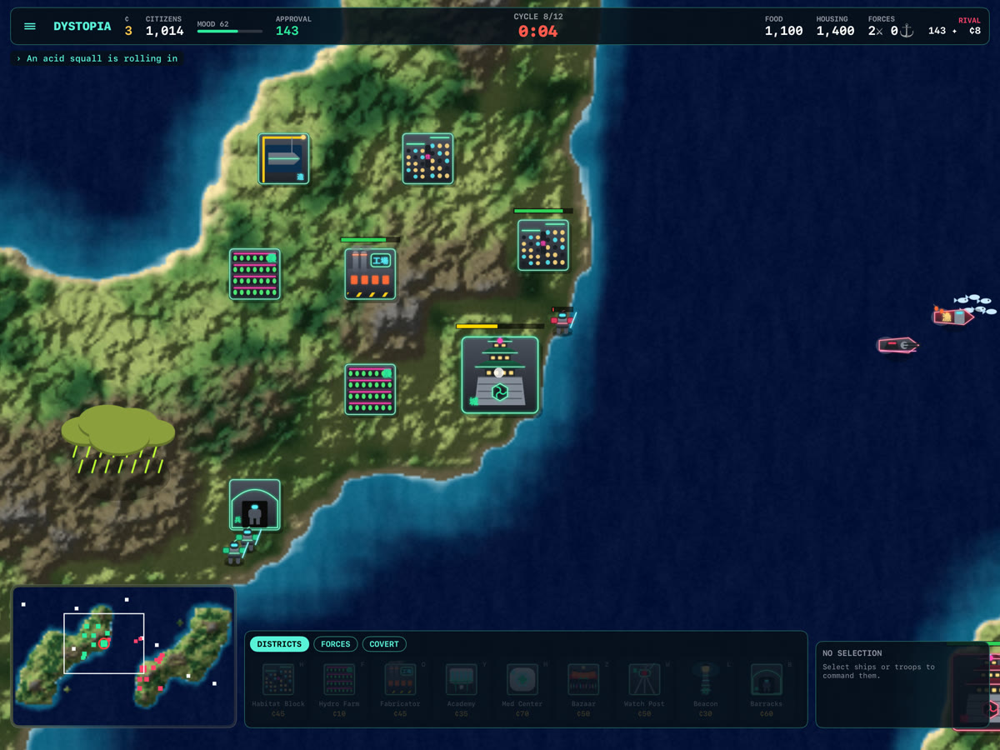

After the global collapse of civilization, can you govern your island wisely in the face of an implacable rival? Welcome to Dystopia.
The game
Dystopia is a real-time island-governance strategy game. Two neon-lit island city-states face each other across a strait. You govern one of them; a rival governor runs the other.
- Govern. Build habitat blocks, hydro farms, fabricators, academies, med centers, bazaars and watch posts. Keep your citizens fed, housed and content.
- Weather the hazards. Rain fronts, acid squalls, cyclones, raiders and unrest.
- Make war. Raise militia and riflemen, build trawlers, gunboats and transports, and invade across the strait.
- Win by approval at the end of your term, or by capturing the rival citadel.
- Learn as you play. A guided tutorial walks you through every district and unit, all the way to a full invasion.
For iPhone, iPad and Mac. Touch, mouse and keyboard, and game controllers are supported. Original procedural techno soundtrack.


